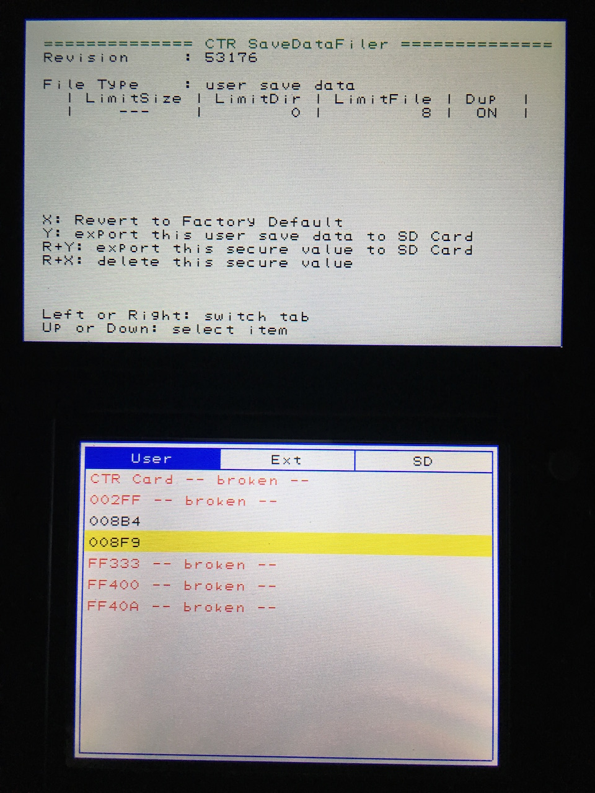
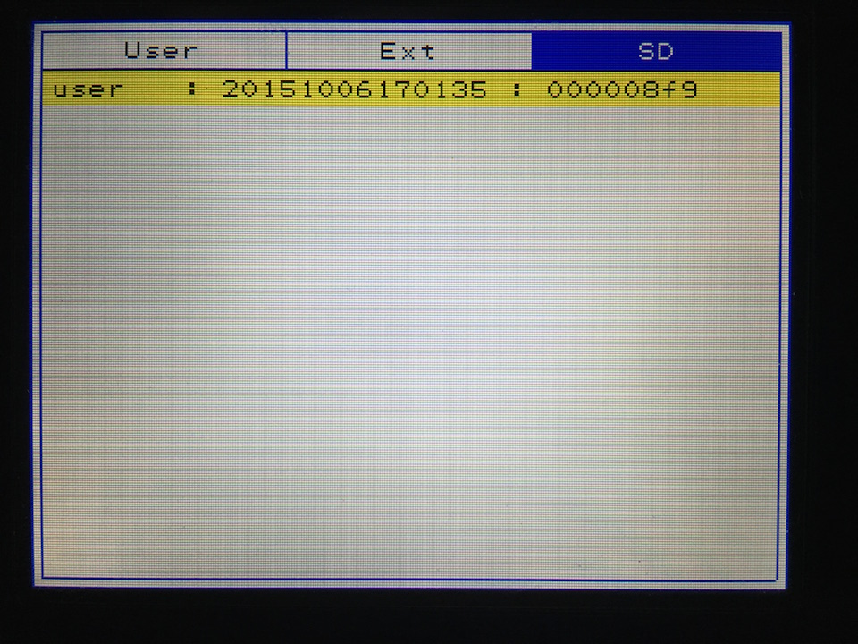

存档管理
2015-10-01
使用工具：SaveDataFiler
我没找到官方的下载地址，网上至少有 2 个版本，也不知道哪个好
我下载了很多次，对比了一下，这个版本用的人最多，savedatafiler.cia, MD5: b7ea4df76518f5ebca439f0fa29b5b52
提供下载：https://www.dropbox.com/s/o0r6md1a570iraq/savedatafiler.cia.zip?dl=0
导出存档
打开这个软件，界面如下

上屏显示了一些信息与用法，下屏显示的是 CIA 的条目
比如 008F9 指的是台版的《塞尔达传说 时之笛 3D》，具体什么条目代表什么游戏，可在这个网站查看：http://www.3dsdb.com/
按 "Y" 键导出这个存档到 SD 卡，会在卡上生成如下类似的目录：filer/UserSaveData/20151006170135
备份
首先进行上一步的「导出存档」，然后将 TF 卡放入电脑
将 filer/UserSaveData/ 整个目录备份即可
恢复存档
将备份的 filer/UserSaveData/ 文件夹复制到 TF 卡，或者只恢复具体的游戏例如 filer/UserSaveData/20151006170135
打开软件，切换到 "SD" 选项卡，选中具体的存档，按下 "A" 键即可导入
